AI for Creators
Free tools and news that matter if you work in Creators.

PureMac: free up space on your Mac without a subscription
PureMac is a free, open-source Mac cleaner that removes junk, fully uninstalls apps, and never tracks you or tries to scare you.
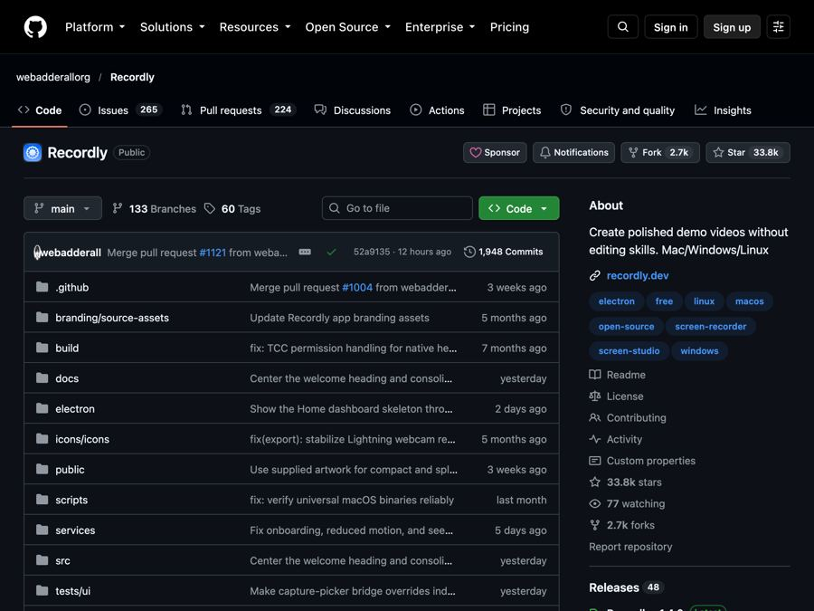
Recordly: make polished screen recordings and demos for free
Recordly is a free screen recorder and editor that adds automatic zooms, a smooth cursor, webcam bubbles and styled backgrounds to your videos.
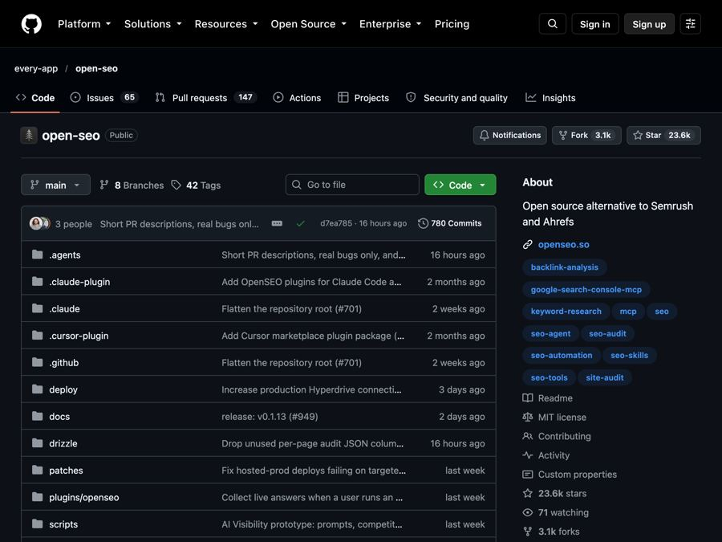
OpenSEO: get found on Google without a big monthly SEO bill
OpenSEO is an open-source alternative to Semrush and Ahrefs for keyword research, rank tracking and site audits, where you pay only for what you use.
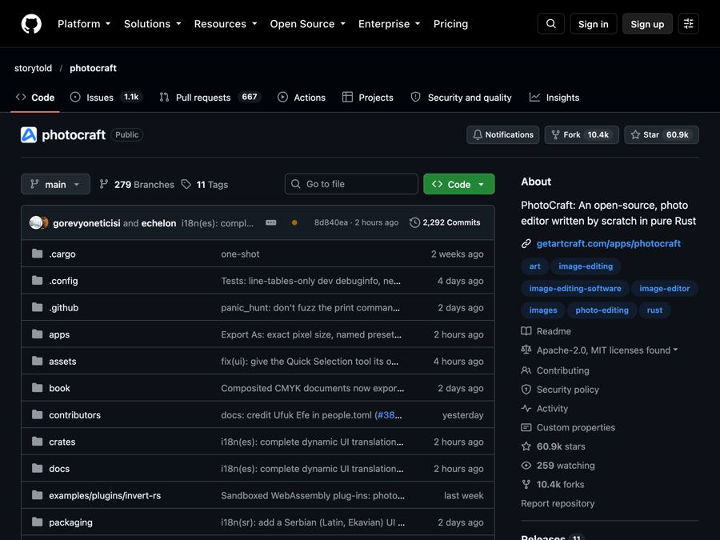
PhotoCraft: a free Photoshop-style editor that opens real PSD files
PhotoCraft is a free, open-source photo editor that works like Photoshop, opens and saves real PSD files, and runs offline on your computer.
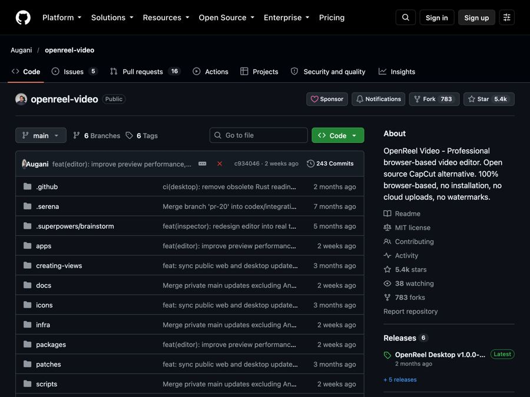
OpenReel: a free video editor in your browser, no watermark
OpenReel is a free, open-source video editor that runs in your web browser and exports your videos with no watermark.
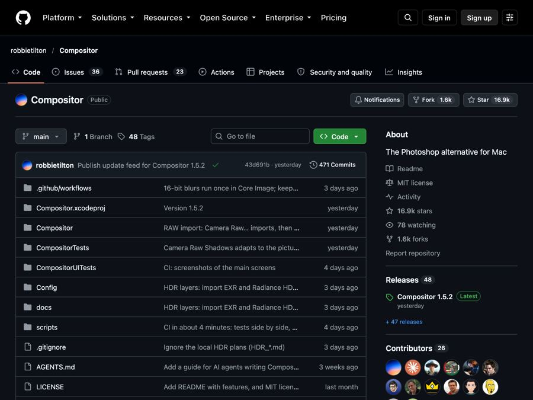
Compositor: a free Photoshop-style photo editor for your Mac
A free, open-source Mac image editor with layers, masks, blend modes and Photoshop-style shortcuts, and no monthly subscription.
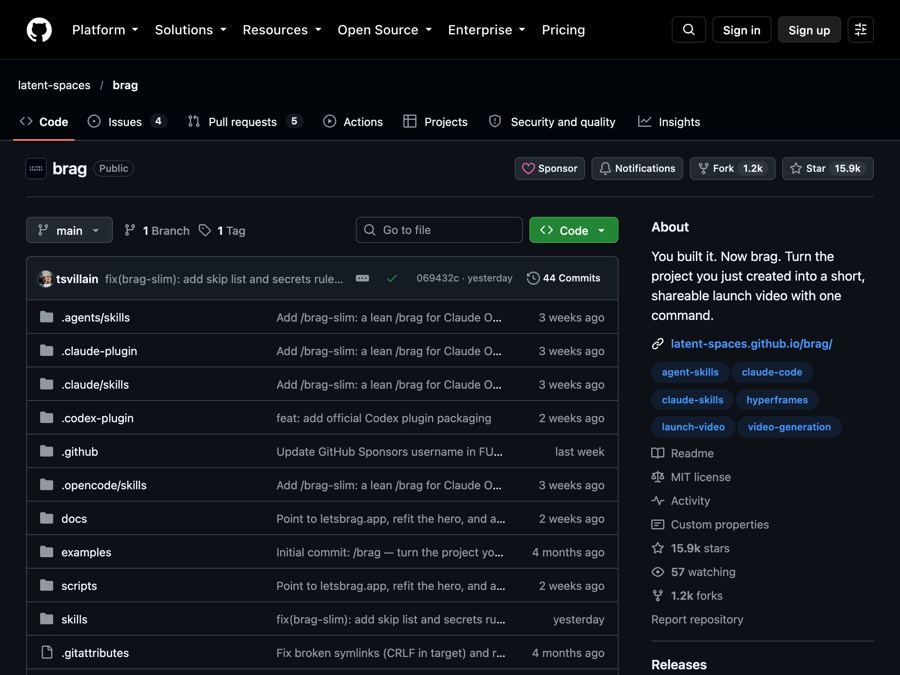
Brag: turn your finished project into a launch video, free
A free AI add-on that turns the project you built into a short launch video with music, motion and ready-to-post text.
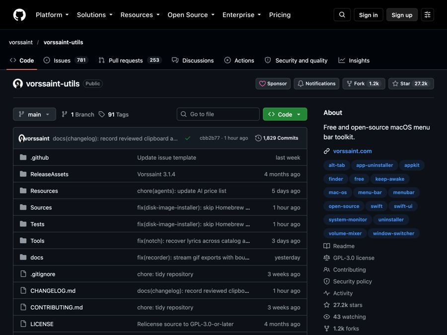
Vorssaint Utils: one free Mac app instead of a dozen paid ones
Vorssaint Utils is a free Mac menu bar app with per-app volume, window snapping, clipboard history, a system monitor and much more.
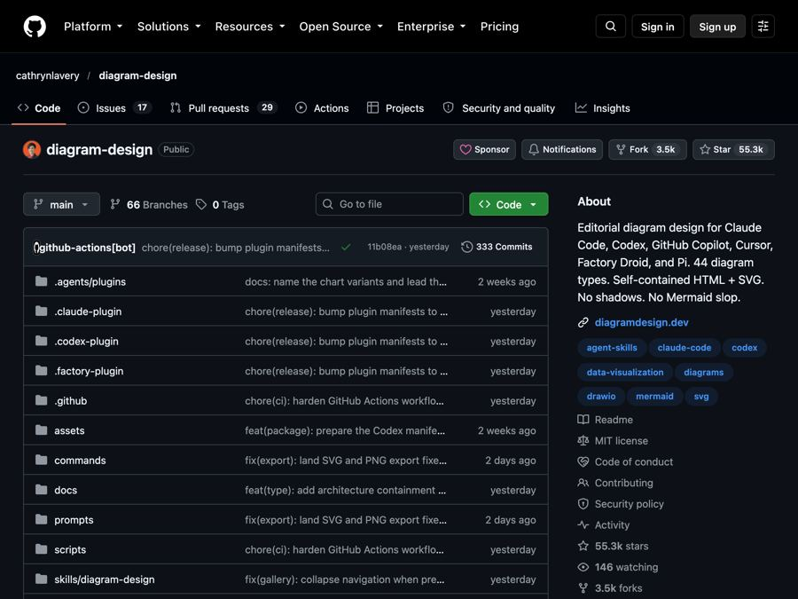
Diagram Design: clean, magazine-style diagrams from one sentence
Diagram Design is a free AI add-on that turns plain-English requests into clean, on-brand diagrams saved as one easy-to-open file.
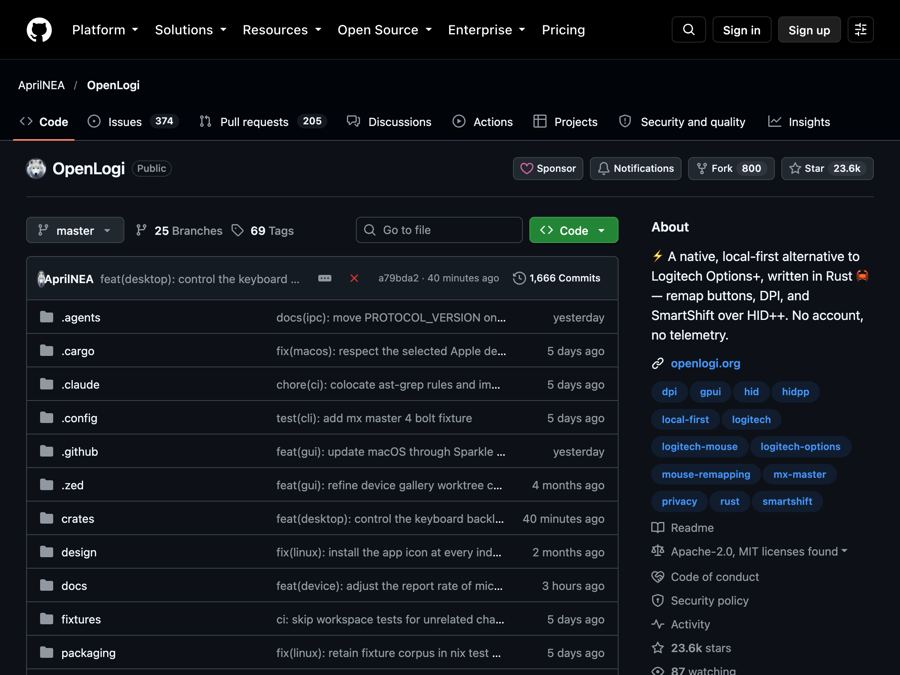
OpenLogi: a light, free replacement for Logitech Options+
OpenLogi is a free, lightweight app that controls Logitech mice, keyboards, webcams and lights without Logitech's own heavy software.
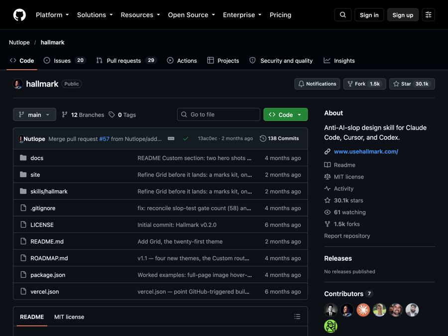
Hallmark: stop your AI from building websites that look AI-made
Hallmark is a free design add-on for AI coding helpers that steers them away from generic, cookie-cutter web pages.
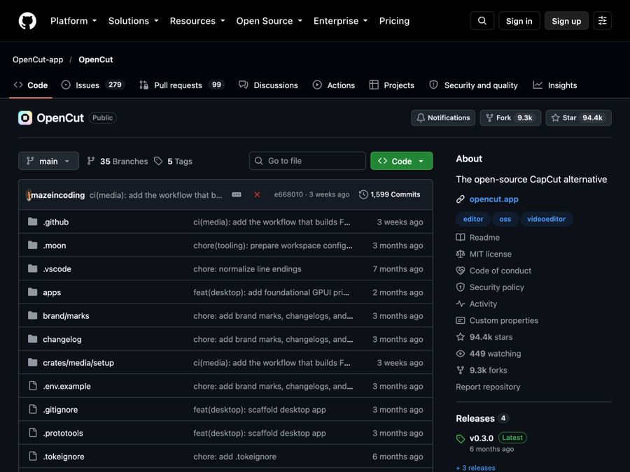
OpenCut: the free, open-source CapCut alternative
A free, open-source video editor that runs in your browser, now being rebuilt for desktop, mobile and AI agents.
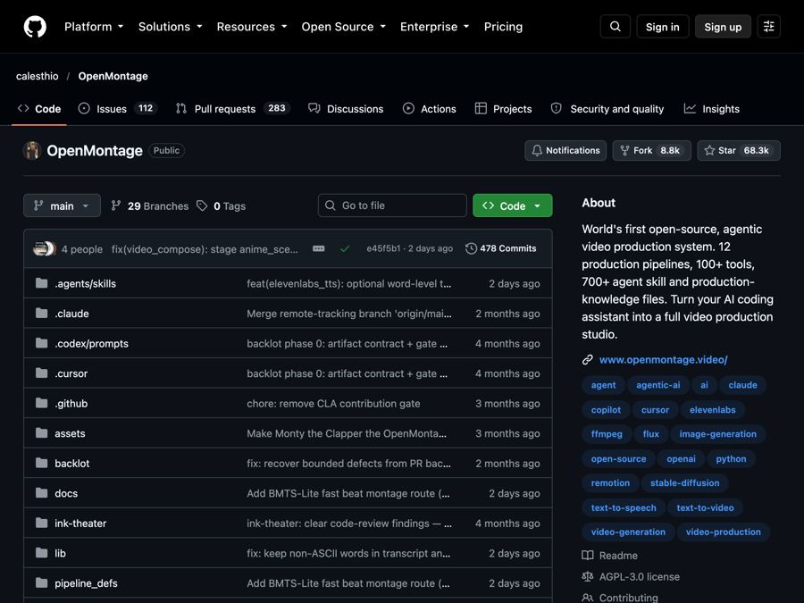
OpenMontage: turn your AI helper into a free video studio
Describe a video in plain words and your AI assistant researches, scripts, narrates, edits and renders it for you.
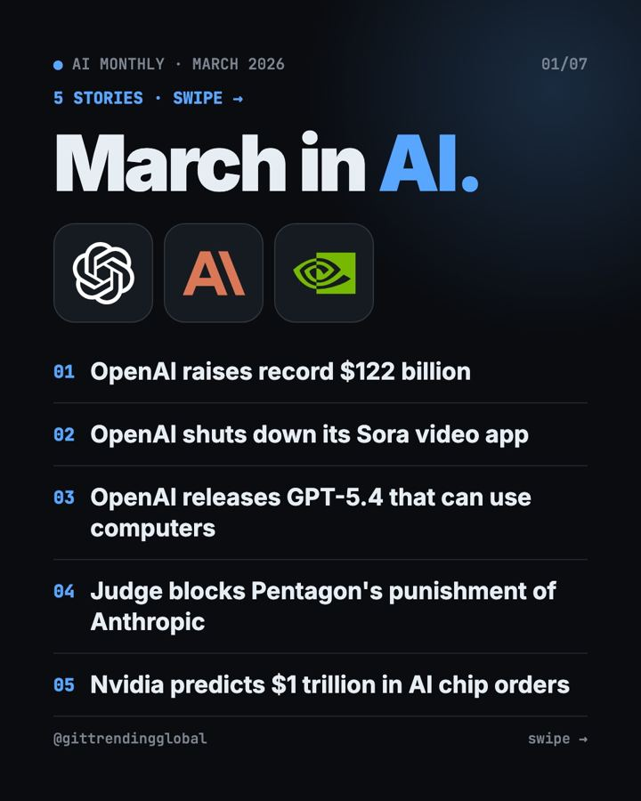
March 2026 in AI: OpenAI goes big, then gets serious
OpenAI raised a record $122 billion, shut down Sora, and launched GPT-5.4, while a judge sided with Anthropic and Nvidia forecast $1 trillion in orders.
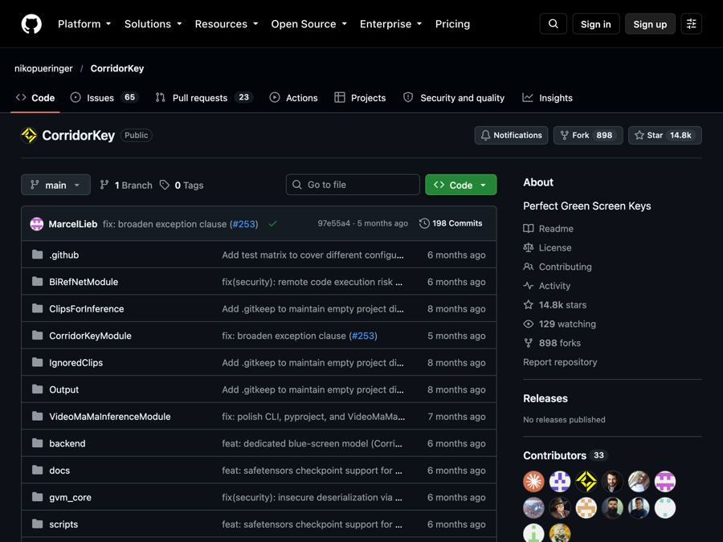
CorridorKey: clean green screen cutouts, even around hair
A free AI tool that pulls people cleanly off green or blue screens, keeping fine hair, motion blur and see-through edges.
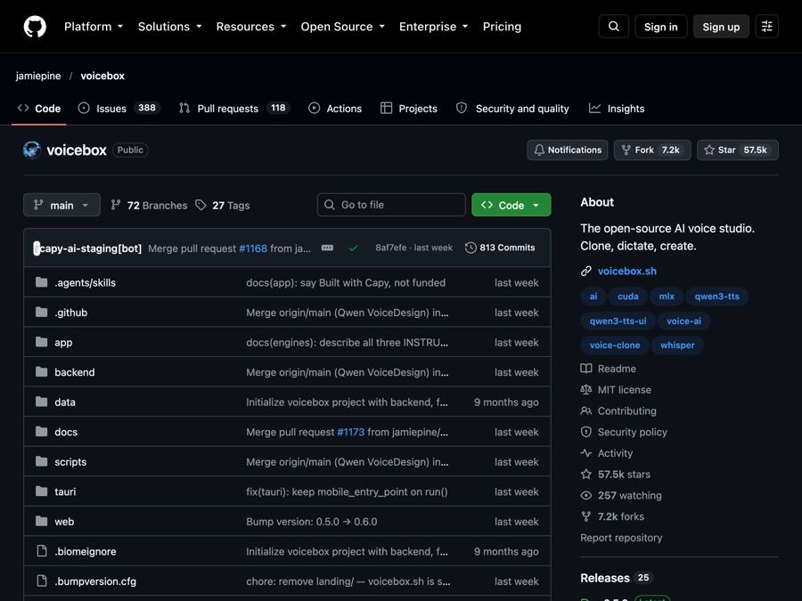
Voicebox: a free, private AI voice studio on your own computer
A free app that clones voices, reads text aloud in 23 languages, and lets you dictate into any app, all on your own computer.